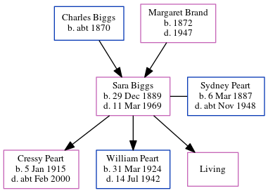

Sydney Ralph Peart 1887 - c1948
[ Home ] | [ Calendar ] | [ Surnames Index ] | [ Errors ] | [ Family History ]Sydney Peart was born in Tynemouth, Tyne and Wear, England on 6 Mar 18871,2 and married Sara Biggs (with whom he had 3 children: Cressy, William Frederick and Doreen, along with 1 surviving child) in Tynemouth around Nov 19084. On 29 Sept 1939, he was living at 15 The Quadrant in Tynemouth1.
He died c. Nov 1948 in Tynemouth3.
Children
- Cressy was born on 5 Jan 1915
- William Frederick was born on 31 Mar 1924
Citations
- 1939 Register - Findmypast (was the head of the household)
- England & Wales births 1837-2006 - Findmypast
- England & Wales deaths 1837-2007 - Findmypast
- England & Wales Marriages 1837-2005 - Findmypast
Media
England & Wales marriages 1837-2005 - BMD/M/1908/4/AZ/000293/117
England & Wales births 1837-2006 - BMD/B/1888/2/AZ/000440/320
1939 Register - TNA/R39/2949/2949K/012/19
England & Wales deaths 1837-2007 - BMD/D/1948/4/AZ/000763/009
Family Tree
Map
Generated by ged2site. Last updated on Jul 3, 2024
Known Issues
Can't find relationship with the home person
Listed in the residence for 29 Sep 1939, but spouse Sara Biggs is not
No records of living with anyone